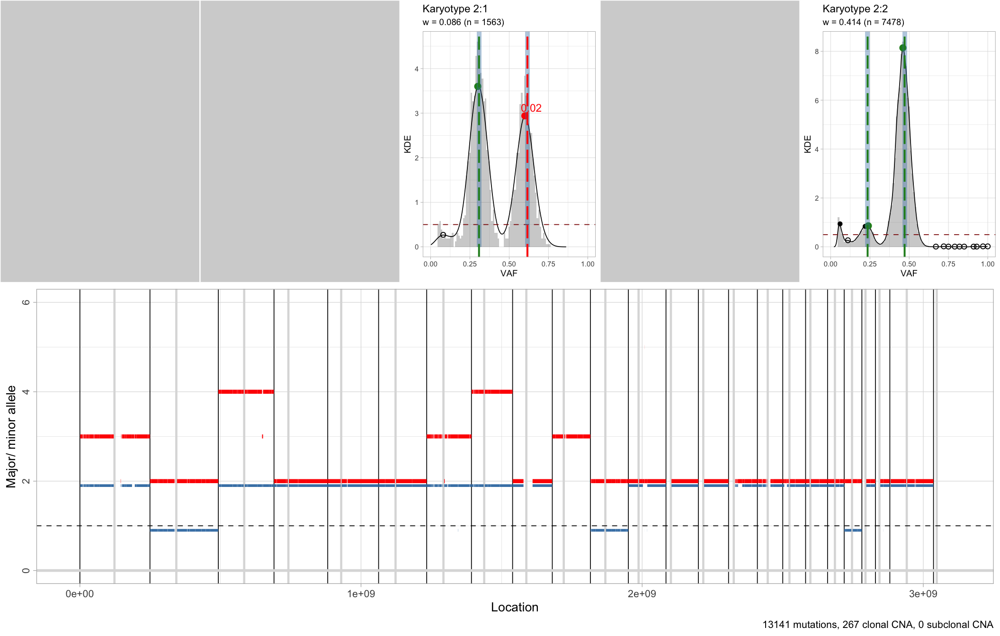
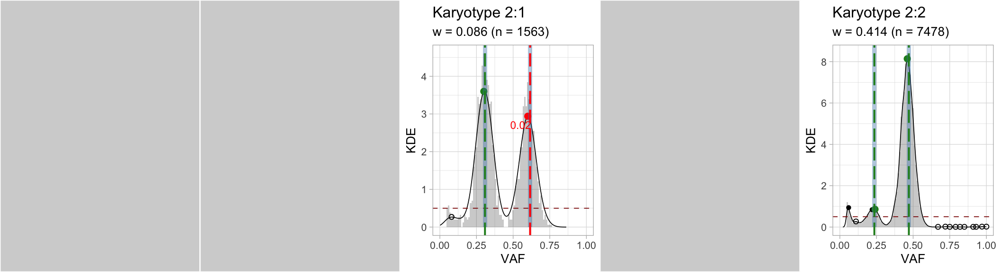
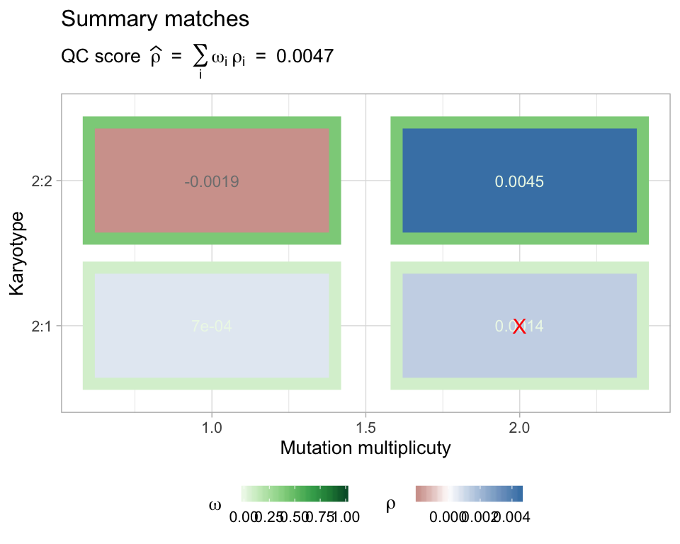
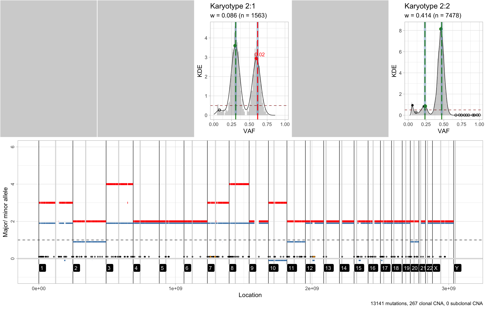

#> [ CNAqc - Copy Number Alteration quality check ]
#> Author : Giulio Caravagna <gcaravagn@gmail.com>
#> GitHub : caravagn/CNAqc
#>
require(tidyverse)
require(cowplot)
#> Loading required package: cowplot
#>
#> ********************************************************
#> Note: As of version 1.0.0, cowplot does not change the
#> default ggplot2 theme anymore. To recover the previous
#> behavior, execute:
#> theme_set(theme_cowplot())
#> ********************************************************
#>
#> Attaching package: 'cowplot'
#> The following object is masked from 'package:ggpubr':
#>
#> get_legendWe work with the same object shown in the introductory vignette.
# Dataset available with the package -- see Get Started.
data('example_dataset_CNAqc', package = 'CNAqc')
x = CNAqc::init(example_dataset_CNAqc$snvs, example_dataset_CNAqc$cna,example_dataset_CNAqc$purity)
#> [CNAqc] Missing CCF column from CNA calls, adding CCF = 1 assuming all calls to be clonal.Peak detection routines can be used to determine the QC of the CNA calls, and are implemented in function analyze_peaks.
Essentially, the logic is that if a certain segment has truly the number of copies of the major and minor alleles that we have estimated, then we should see this also in the VAF distribution for those very same mutations. Using standard principles of Copy Number analysis we can compute, as a function of the estimated purity and the major/ minor of a segment, where we expect to see a certain group of mutations. This kind of signal is picked up examining the profile of the VAF distribution, and using a peak-detection heuristic to match peaks in the data to their expectation.
Because peaks are estimated from data, we can measure in a quantitative way how off data are with respect to the theoretical predictions. A large deviance suggests usually wrong purity estimation, which in turns affects the calling of CNA segments. Therefore, with the measurement available it is possible to determine how much the purity should be adjusted to achieve a better fit of the input data.
#> [ QC analysis with peaks detection ]
#>
#> CNAqc n = 13141 mutations for 267 CNA segments (267 clonal, 0 subclonal)
#> Purity 89% cellularity
#> Karyotypes 7478 (2:2); 1893 (4:2); 1625 (3:2); 1563 (2:1); 312 (3:0); 81 (2:0); 4 (16:2); 2 (25:2); 2 (3:1); 1 (106:1); 1 (26:2); 1 (99:1)
#>
#> Peaks QC FALSE
#> CCF FALSE
#>
#> =-=-=-=-=-=-=-=-=-=-=-=-=-=-=-=-=-=-=-=-=-=-=-=-=-=-=-=-=-=-=-=-=-=-=-=-=-=-=-=-=-
#> Analysing ~ karyotypes 1:0, 1:1, 2:1, 2:0, 2:2 ~ 9041 mutations ~ min. k = 657
#> =-=-=-=-=-=-=-=-=-=-=-=-=-=-=-=-=-=-=-=-=-=-=-=-=-=-=-=-=-=-=-=-=-=-=-=-=-=-=-=-=-
#> # A tibble: 3 x 5
#> karyotype n n_proportion QC norm_prop
#> <chr> <int> <dbl> <lgl> <dbl>
#> 1 2:2 7478 0.569 TRUE 0.827
#> 2 2:1 1563 0.119 TRUE 0.173
#> 3 2:0 81 0.00616 FALSE NA
#>
#> Peak detector p = 0.89 ~ KDE a = 1 c = 0.5 ~ peakPick n = 1 epsilon = 0.015
#>
#> =-=-=-=-=-=-=-=-
#> Results table
#> =-=-=-=-=-=-=-=-
#> # A tibble: 4 x 10
#> mutation_multip… karyotype peak x y discarded offset matched
#> <dbl> <chr> <dbl> <dbl> <dbl> <lgl> <dbl> <lgl>
#> 1 2 2:1 0.616 0.6 2.94 FALSE 0.0159 FALSE
#> 2 1 2:1 0.308 0.3 3.6 FALSE 0.00796 TRUE
#> 3 2 2:2 0.471 0.46 8.14 FALSE 0.0109 TRUE
#> 4 1 2:2 0.235 0.24 0.86 FALSE -0.00455 TRUE
#> # … with 2 more variables: weight <dbl>, score <dbl>
#>
#> Fit score: 0.00468956233367035
#>
The default analysis does:
analyze LOH regions (A, AA), diploid regions (AB), and amplification regions (AAB, AABB). These correspond to
'1:1','2:1','2:0'and'2:2'in “Major:minor” notation. Karyotypes are subset by their size (normalized for the number of input mutations), and by default Karyotypes smaller than 5% of the actual mutational burden are not considered;uses a KDE methods with unitary adjustment and Gaussian kernel;
uses the
peakPickpackage to determine peaks in the KDE smooth of the VAF distribution, subsetting peaks below a mnimum density which could be due to noise and miscalled CNAs. Peaks at a certain location are matched with a range of plus/minus0.5 * epsilon, whereepsilonis a pre-defined value which by default is0.015.
The results of this analysis is a set of scores that account for karyotype size and peaks offset, and that are combined into a linear model to compute an overall QC metrics, called rho.
A summary table is available after the computatio, and is stored inside the named list peaks_analysis.
#> CNAqc n = 13141 mutations for 267 CNA segments (267 clonal, 0 subclonal)
#> Purity 89% cellularity
#> Karyotypes 7478 (2:2); 1893 (4:2); 1625 (3:2); 1563 (2:1); 312 (3:0); 81 (2:0); 4 (16:2); 2 (25:2); 2 (3:1); 1 (106:1); 1 (26:2); 1 (99:1)
#>
#> Peaks QC TRUE ~ s = 0.00468956233367035
#> # A tibble: 4 x 10
#> mutation_multip… karyotype peak x y discarded offset matched
#> <dbl> <chr> <dbl> <dbl> <dbl> <lgl> <dbl> <lgl>
#> 1 2 2:1 0.616 0.6 2.94 FALSE 0.0159 FALSE
#> 2 1 2:1 0.308 0.3 3.6 FALSE 0.00796 TRUE
#> 3 2 2:2 0.471 0.46 8.14 FALSE 0.0109 TRUE
#> 4 1 2:2 0.235 0.24 0.86 FALSE -0.00455 TRUE
#> # … with 2 more variables: weight <dbl>, score <dbl>
#> CCF FALSE
#>
Plotting results of the analysis
You can visually summarise the result of the QC analysis, which reports the peaks matched to data, the karyotype size (re-normalized for the karyotypes used) and the overall score.

For every karyotype that you have tested, a plot is available for its peak detection’s analysis, which shows the estimated KDE and the matched peaks. This plot is assembled as a ggpubr figure with all the ggplot outputs; notice that the fits for the karyotypes that have not been used, but that were passed through parameter karyotypes of functionanalyze_peaks`, are just gray panels.
plot_peaks_analysis(x)
#> Warning: Removed 2 rows containing missing values (geom_bar).
#> Warning: Removed 32 rows containing missing values (geom_path).
#> Warning: Removed 2 rows containing missing values (geom_bar).
#> Warning: Removed 13 rows containing missing values (geom_path).
Individual karyotypes plots are available inside the named lists peaks_analysis$plots, named afte each required karyotype.

# Tetraploid segments
x$peaks_analysis$plots$`2:2`
#> Warning: Removed 2 rows containing missing values (geom_bar).
#> Warning: Removed 13 rows containing missing values (geom_path).
You can integrate plots from QC analysis with data; in this case we combine them with segments.
cowplot::plot_grid(
plot_peaks_analysis(x),
plot_segments(x) + ylim(-1, 6),
rel_heights = c(.8, 1),
nrow = 2
)
#> Warning: Removed 2 rows containing missing values (geom_bar).
#> Warning: Removed 32 rows containing missing values (geom_path).
#> Warning: Removed 2 rows containing missing values (geom_bar).
#> Warning: Removed 13 rows containing missing values (geom_path).
#> Warning: Removed 10 rows containing missing values (geom_segment).